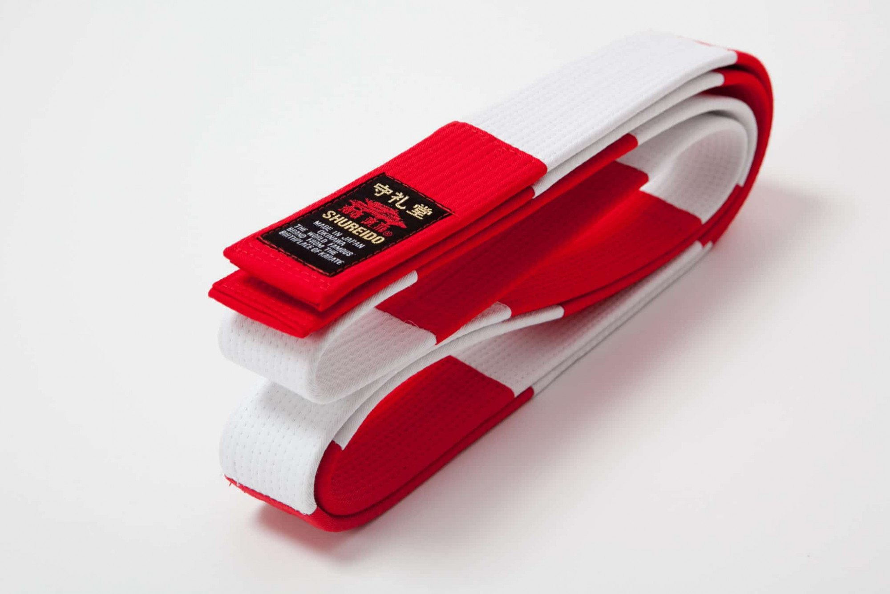
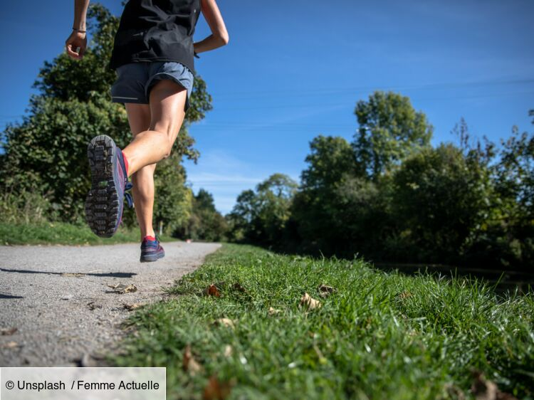

DERNIERE NEWS

PREMIERE CEINTURE ROUGE ET BLANCHE AU CLUB !!!!
C'est avec une immense fierté que nous vous annonçons la réussite à
l'examen de 6ème Dan de _____ _____, enseignant au PSP Karate. L'examen
se déroulait, vendredi 4 décembre à l'INJ à Paris. Un petit séjour d'une
nuit, une grosse matinée, bien stressante et épuisante et ça y est, la
1ère Ceinture Rouge et Blanche est désormais au Club. Félicitations à
_____ pour son travail de ces derniers mois, malgré les conditions
difficiles...et promis, on fêtera cet évènement dignement... dès que
nous en aurons l'autorisation
LES PROCHAINS STAGE
Stage CD 44-
Dimanche 25 avril 2021
DOJO départementale - St-Père en Retz
Stage CD 44-
Dimanche 25 avril 2021
DOJO départementale - St-Père en Retz
Stage CD 44-
Dimanche 25 avril 2021
DOJO départementale - St-Père en Retz
Actualité
Il a été établi que nous ne ferions pas de coupure pour les Ados/Adultes
dès la réouverture du Dojo...Cours pendant les vacances scolaires
estivales inclues..... Dans la situation actuelle, nous restons sur la
base d'un cours de Taïso en Live par semaine, le vendredi. Nous allons
également tourner des tutos sur You Tube pour s'entraîner seul..... Nous
avons repris depuis quelques jours les cours de Karate en extérieur face
au Dojo. Ces cours sont ouverts pour les Ados et Adultes. Cela reste
encore possible et semble être très apprécié. Pour l'instant, nous
sommes sous la halle du camping face au Dojo. Nous sommes à l'abri et
pratiquons en Kim, baskets et surkim ou survetement... Prochain
entraînement dimanche 14 février à 10h..
